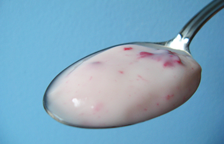

Що страшного в йогуртах?
Чому у нас виникають сумніви?
Часто тому що ми беремо до рук апетитну пляшечку, дивимося на етикетку і бачимо там... багато "всього". Великий перелік інградієнтів з насторожуючими назвами відлякують вибагливих споживачів, для яких йогурт – атрибут здорового харчування та стрункої фігури.
Тому найпереконаніші послідовники ранкових пробіжок, володарі міцної сили волі і автори відео-блогів на теми здорового способу життя мужньо обирають простий двокомпонентний (молоко, молочнокислі бактерії) йогурт без наповнювача, чи готують його самі вдома.
Що і навіщо входить до складу йогурту з наповнювачем та чи це страшно?
Як вже згадувалось, головними складовими йогуртів є молоко та молочнокислі бактерії. Іншими можливими додатковими компонентами можуть бути фруктові (і не лише) наповнювачі, компоненти для покращення консистенції (загущувачі), ароматизатори, барвники, фортифікуючі елементи, цукор.
Почнемо із загущувачів. Найчастіше - це різні види крохмалю, карагенан, пектин чи гуарова камедь, а іноді желатин та навіть манна крупа. Головною метою додавання цих компонентів є надання продукту приємної консистенції та вигляду. Ми можемо скільки завгодно казати, що "для нас це немає значення", однак коли справа доходить до купівлі, то споживач надає перевагу продукту із густішою консистенцією, а виробник – виробляє те, що продається. До слова, якщо досягти такої ж консистенції за рахунок жирності, то це, по-перше, вплине на вартість, а, по-друге, значно підвищить калорійність і вміст насичених жирів.
Деякі загущувачі, як наприклад, крохмалі чи манна крупа, нами перетравлюються та засвоюються у вигляді додаткових калорій (не варто панікувати, їх не настільки багато), а деякі – карагенан, пектин чи гуарова камедь – є джерелом клітковини та вкусняшок для нашої мікробіоти. До слова, про карагенан, пишуть, що його репутація не абсолютно білосніжно сяюча, однак, щоб спричинити згадувані у одній з публікацій патології, очевидно, доведеться з'їсти його чималенько – стільки йогурту навряд чи хто подужає. Пектин та гуарова камедь навіть продаються як окремі харчові добавки, які сприяють кращій роботі кишківника. А якщо говорити по желатин, то це ще і джерело амінокислот.
Ароматизатори – відповідно, надають вираженішого і стабільнішого аромату продукту. Самі по собі ці добавки не є шкідливими. Окрім того, що при надмірній кількості роблять наші відчуття дещо інтенсивнішими та, ймовірно, спонукають з'їсти більше.
Серед барвників часто використовують бета-каротин чи сік червоного буряка, що, погодьтесь, зовсім незле.
Фортифікуючі компонети є новим, можна сказати навіть - модним напрямком в харчовій індустрії. Це збагачення продукту різними корисними речовинами – переважно вітамінами та клітковиною.
А тепер про страшне
Який компонент ми ще не згадали і який міститься у всіх йогуртах із наповнювачем (а часом і без)? Цукор. Часом - до 18 %. Жоден із вище перерахованих компонентів і поруч не стояв по "некорисності" для нашого організму у порівнянні із цукром у такій кількості. Його підступність полягає у тому, що ми про нього часто не замислюємося. Бо коли п'єм чай, то додавання чи недодавання цукру є свідомим рішенням, а багато продуктів, які ми споживаємо, містять, так званий доданий цукор. І коли ми їмо сосиски з кетчупом, або тістечка, то десь приблизно підозрюємо, що то може бути не найкорисніша їжа. А у випадку йогурту ми ж очікуємо саме користі.
У 2015 році ВООЗ закликала усі країни зменшити споживання цукру, який є фактором багатьох хвороб – діабету другого типу, серцевих захворювань, ожиріння та карієсу. Експерти наголошують на небезпеці саме доданого цукру, про який споживач часто просто не підозрює. Наполегливо рекомендується скоротити вживання цукру до менш, ніж 10% раціону, що є критичною межою і пов'язано із високим ризиком виникнення тих чи інших захворювань. Бажаною ж межою споживання цукру є менше 5% денного раціону.
Трохи цифр, щоб розібратися: 10% від раціону в раціоні з 2000 калорій - 200 калорій, або ж 50 грам, або ж 12 чайних ложок. 5% - відповідно – 100 калорій, або 25 г, або 6 чайних ложок (пам'ятаємо, що це усереднені дані, як мінімум, ми всі маємо різну вагу). Що з цього випливає?
Якщо в йогурті масою 500 г міститься 12 г цукру на 100 мл, то в цілій пляшці – 60 г цукру, що вже перевищує критичну межу. Це ми ще каву з тістечком не з'їли, а всього лише "оздоровилися" "трохи засолодким" йогуртом.
... І зараз більша частина тих, хто дочитав до цього місця подумає - "ай-яй-яй, що ж це нас так труять!".
Насправді це буде не зовсім справедливо по відношенню до виробників. Бо вони виробляють те, що продається, те, чому ми надаємо перевагу. Ми ж любимо побалувати себе солоденьким, а після шоколаду та тістечок менш солодкий йогурт може здаватися пісним та нецікавим. Наші рецептори пристосовуються та звикають до вищих концентрацій цукру, "притуплюються", так би мовити, і стають менш чутливими. Хороша новина – цей процес зворотій. Якщо на певний час обмежити споживання цукру та солодощів, то вже за тиждень-два можна по-новому відчути смак світу.
Але досить лірики – що робити з йогуртами?
По-перше – дивитися на вміст цукру на упаковці (до речі, актуально не лише для йогуртів). Багато країн ввели правила маркування, що передбачають окремий пункт – додані цукри. У нас, на жаль, це не є обов'язковим поки, хоч деякі виробники також практикують. Відповідно – обирати той, що має менший вміст цукру.
А також ми пропонуємо займати активну громадянську/споживацьку позицію - обрати улюблений йогурт, який би Вам смакував краще, якби містив менше цукру, зателефонувати на гарячу лінію виробника (номер телефону вказано на упаковці продукту) та любязно висловити своє побажання з приводу зменшення вмісту цукру! Відповідно, якщо буде створено такий попит, буде пропозиція.
Де йогурти кращі?
І наостанок – для любителів йогуртів результати міні-дослідження - огляд йогуртів з українських прилавків та прилавків деяких інших країн.
Ми порівнювали вміст цукру та інформацію про присутність живих молочнокислих бактерій на етикетках 25 українських йогуртів та 31 йогурт із інших країн (Німеччина – 11, США – 5, Чехія – 4, Швейцарія – 3, Польша – 3, Китай – 2, Австрія – 1, Ізраїль – 1, Канада – 1). Відразу скажемо, що даних дуже небагато і вони, звичайно, не охоплюють весь той асортимент, який насправді існує. Скоріш варто це сприймати, як певний зріз, який, однак, дозволяє побачити деякі цікаві факти. Ну, наприклад, в Німеччині та Штатах важко знайти йогурт із живими молочнокислими бактеріями. Найвищий вміст цукру був у йогуртах із США – до 17-18%! Найнижчий вміст цукру у йогуртах із фруктовим наповнювачем ми побачили на польських етикетках – 9,5-10,7%. Про присутність живих молочнокислих бактерій було зазначено на чеських, польських та китайських йогуртах. Цікаво, що у китайських йогуртах кількість бактерій заявляється в 10 разів вища (10*8), ніж, наприклад, вимагається у нас (10*7).
Згідно вимог і як зазначено на етикетках, всі переглянуті українські йогурти містили молочнокислі бактерії. Вміст цукру був різний – близько 10-11% в дитячих йогуртах, 12,8-15,6% у решти йогуртів із фруктовими наповнювачами.
Підсумовуючи - у наших продуктах, як мінімум, є живі молочнокислі бактерії і це дуже класно! Ситуація із цукром залишає бажати кращого. Але ж ми її зміним, еге ж? :)
